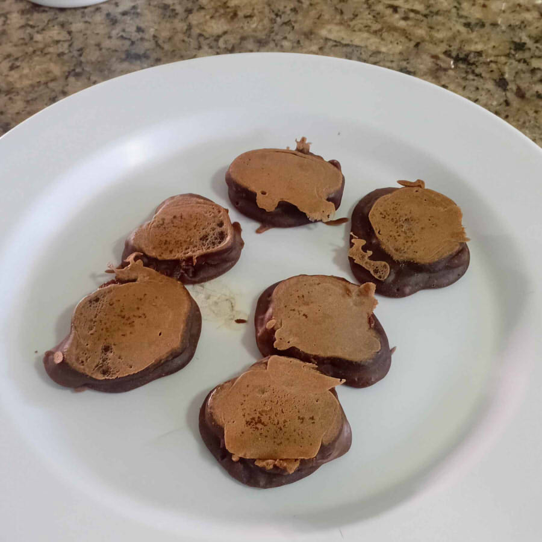

Introdução
Meu nome é Mario Filho, fiz essa landing page para compartilhar algumas receitas que aprendi. Além de ser aluno full stack no digital college, eu fiz um curso de padeiro no SENAI e trabalhei na industria de alimentos como auxiliar de produção, no entanto as receitas aqui são as que eu já sabia, mas mesmo assim espero que tente faze-las em casa.


Receita 1: Massa de torta
Igredientes
-
2 Xicaras de farinha de trigo
-
1/2 colher de chá de sal
-
1 colher de chá de açucar
-
2 colheres de sopa de manteiga
-
Agua morna
Uma massa simples e rapida de fazer, pode ser modelada de varias formas, dependendo da quantidade de manteiga, pode ficar como massa de empada, ou massa podre, como é conhecida popurlamente.
Modo de fazer
Misture a farinha, sal e açucar antes de adicionar a manteiga, voce pode derreter se quiser, misture a agua morna até ter uma massa que não grude nas mãos
Preparo
Agora é só abrir a massa na forma que quiser, recheio a gosto, normalmente eu faço de queijo e presunto, se quiser pode fazer uma tampa e pincelar com gema de ovo para uma torta tradicional, ou deixar aberta como um quiche, também serve para fazer num formato de petit four. Asse no forno pr=e-aquecido a 200 °C por 15 a 20 minutos, dependendo do seu gosto.
Receita 2: Bruaca da mãe
Igredientes


-
5 colheres de sopa de farinha de trigo
-
2 colheres de sopa de açicar
-
1 colher de sopa de cacau em pó
-
Agua
Essa receita de panqueca foi minha mãe que me ensinou, bem facil mesmo, só misturar tudo e assar numa frigideira a fogo baixo, unte ela com um pouco de azeite ou oleo para não grudar, 2 minutos de um lado e 1 minuto e meio do outro, eu gosto de colocar uma barrinha de chocolate e cobrir com a massa antes de virar, pra rechear a bruaca.
A sua receita
Eu adoraria conhecer alguma receita rapida e simples assim que voce saiba, use a caixa abaixo para compartilhar! Ou deixe um comentário do que achou.